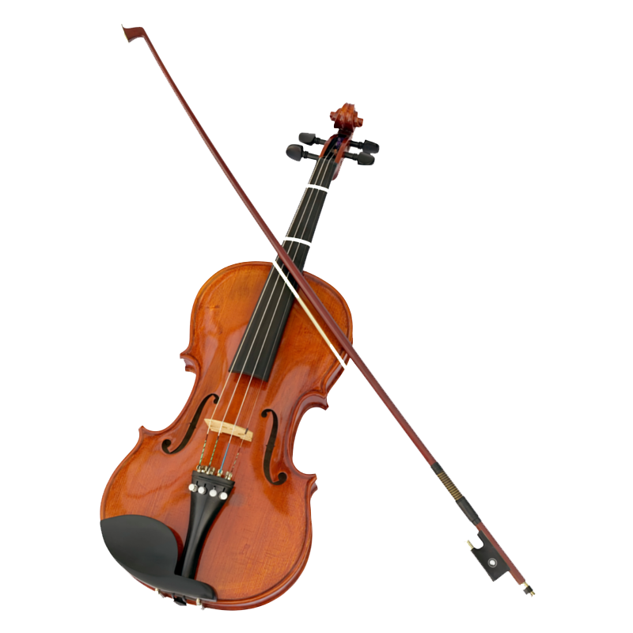

The violin, sometimes referred to as a fiddle, is a wooden chordophone, and is the smallest, and thus highest-pitched instrument (soprano) in regular use in the violin family. Smaller violin-type instruments exist, including the violino piccolo and the pochette, but these are virtually unused. Most violins have a hollow wooden body, and commonly have four strings (sometimes five), usually tuned in perfect fifths with notes G3, D4, A4, E5, and are most commonly played by drawing a bow across the strings. The violin can also be played by plucking the strings with the fingers (pizzicato) and, in specialized cases, by striking the strings with the wooden side of the bow (col legno).
Violins are important instruments in a wide variety of musical genres. They are most prominent in the Western classical tradition, both in ensembles (from chamber music to orchestras) and as solo instruments. Violins are also important in many varieties of folk music, including country music, bluegrass music, and in jazz. Electric violins with solid bodies and piezoelectric pickups are used in some forms of rock music and jazz fusion, with the pickups plugged into instrument amplifiers and speakers to produce sound. The violin has come to be incorporated in many non-Western music cultures, including Indian music and Iranian music. The name fiddle is often used regardless of the type of music played on it.